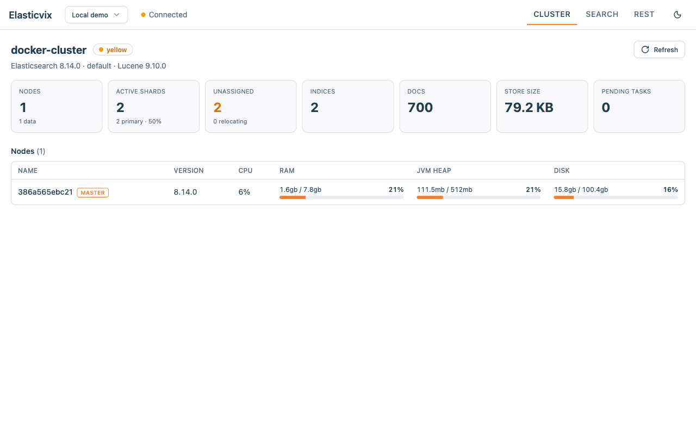
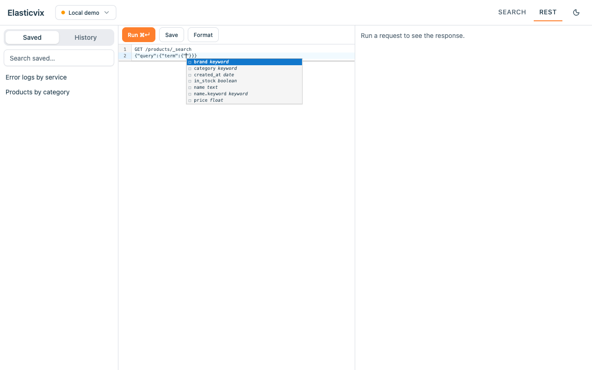
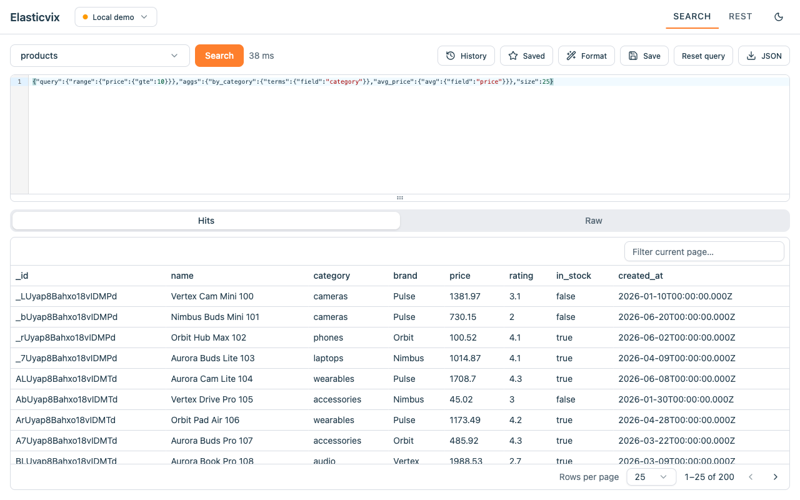
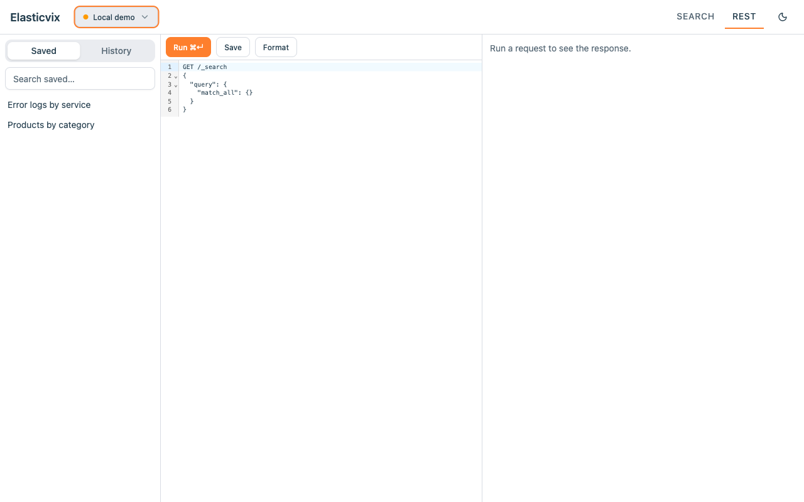
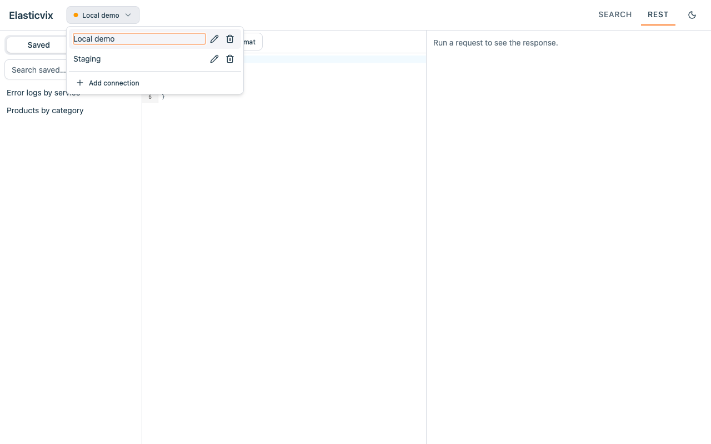
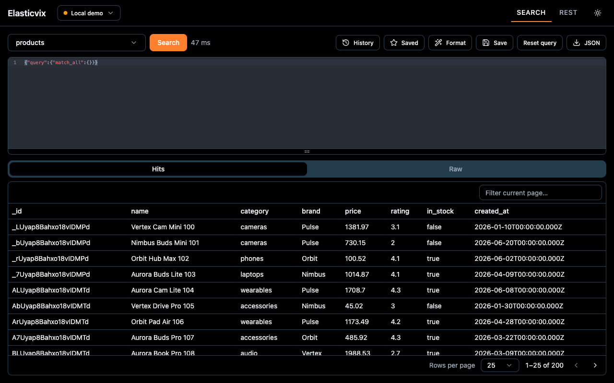

Cluster Overview
- The tab it opens on: cluster health, version, and shard / index / doc counts at a glance
- Per-node table with RAM, JVM heap, disk, and CPU usage
- One-click refresh; each section loads on its own

Query Console
- Autocomplete that knows your data: real field names and real field values (top values of keyword fields), read live from your cluster — not just keywords
- Context-aware suggestions for API endpoints and Query DSL
- Field linting: flags fields that aren't in your index mapping before you run
- Response viewer with JSON folding, path filtering, and one-click download
- Formatting and Cmd/Ctrl+Enter to run

Search UI
- Pick indices and search without hand-writing full requests
- Browse each index's mapping as a searchable field → type table
- Results in a hits table with a document detail view
- Edit or delete a document straight from the results, with a confirm before delete
- Run aggregations and inspect results in the raw response view
- Download results as JSON

Saved Queries & History
- Save queries with names and tags, find them again with search
- Automatic query history

Multi-Cluster
- Store multiple connections and switch instantly
- Cluster health at a glance
- Auth: none, basic auth, API key, or bearer token
Your data stays yours
All data stays on your machine. Connections, credentials, saved queries, and history are stored locally in your browser and sent only to the Elasticsearch clusters you configure. No analytics, no tracking, nothing ever sent to us.

Free & open source
Elasticvix is open source under the MIT License. There is no server behind the extension — we never store any of your data. Browse the code, open an issue, or send a pull request. Contributions are welcome.